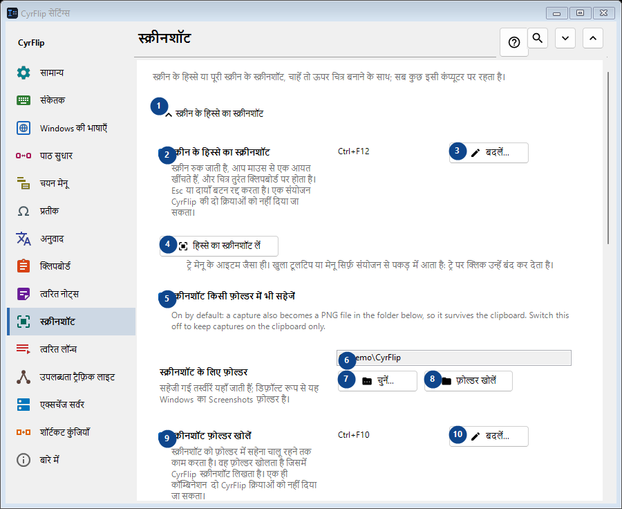
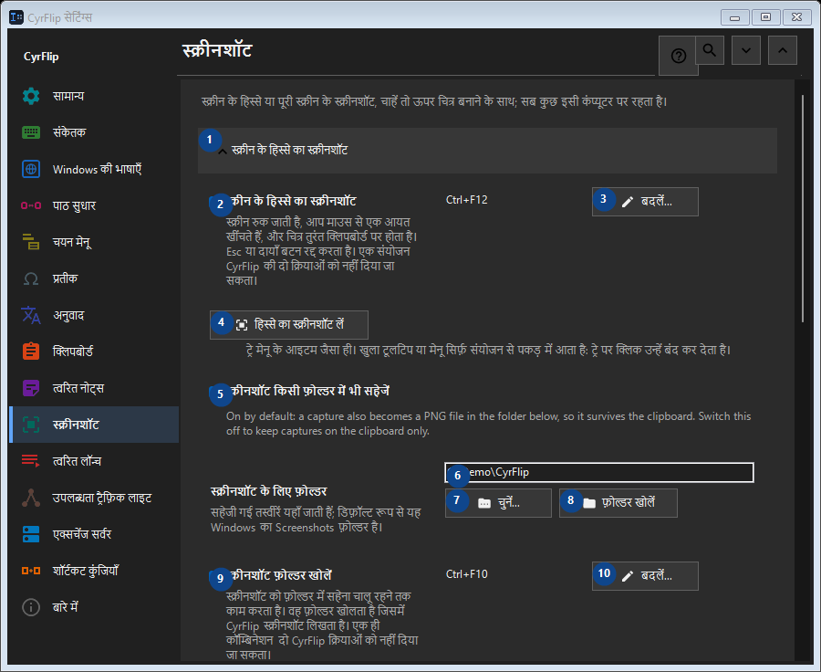

स्क्रीनशॉट
इसका उपयोग
स्क्रीन के हिस्से या पूरी स्क्रीन के स्क्रीनशॉट, चाहें तो ऊपर चित्र बनाने के साथ; सब कुछ इसी कंप्यूटर पर रहता है।


उपयोग का क्रम
सेटिंग तुरंत लागू होती हैं। कोई अनिवार्य क्रम नहीं है; नीचे दिए समूहों का उपयोग करें।
तत्व
1. स्क्रीन के हिस्से का स्क्रीनशॉट
बताई गई कार्रवाई के लिए इस आदेश का उपयोग करें। स्वीकार करने से पहले पुष्टि पढ़ें।
आपके शॉर्टकट2. स्क्रीन के हिस्से का स्क्रीनशॉट
स्क्रीन रुक जाती है, आप माउस से एक आयत खींचते हैं, और चित्र तुरंत क्लिपबोर्ड पर होता है। Esc या दायाँ बटन रद्द करता है। एक संयोजन CyrFlip की दो क्रियाओं को नहीं दिया जा सकता।
आपके शॉर्टकट3. बदलें - स्क्रीन के हिस्से का स्क्रीनशॉट
बताई गई कार्रवाई के लिए इस आदेश का उपयोग करें। स्वीकार करने से पहले पुष्टि पढ़ें।
आपके शॉर्टकट4. हिस्से का स्क्रीनशॉट लें
ट्रे मेनू के आइटम जैसा ही। खुला टूलटिप या मेनू सिर्फ़ संयोजन से पकड़ में आता है: ट्रे पर क्लिक उन्हें बंद कर देता है।
आपके शॉर्टकट5. स्क्रीनशॉट किसी फ़ोल्डर में भी सहेजें
On by default: a capture also becomes a PNG file in the folder below, so it survives the clipboard. Switch this off to keep captures on the clipboard only.
आपके शॉर्टकट6. स्क्रीनशॉट के लिए फ़ोल्डर
पास के लेबल के अनुसार मान चुनें या दर्ज करें। आगे बढ़ने से पहले जाँचें।
आपके शॉर्टकट7. चुनें - स्क्रीनशॉट के लिए फ़ोल्डर
बताई गई कार्रवाई के लिए इस आदेश का उपयोग करें। स्वीकार करने से पहले पुष्टि पढ़ें।
आपके शॉर्टकट8. फ़ोल्डर खोलें - स्क्रीनशॉट के लिए फ़ोल्डर
बताई गई कार्रवाई के लिए इस आदेश का उपयोग करें। स्वीकार करने से पहले पुष्टि पढ़ें।
आपके शॉर्टकट9. स्क्रीनशॉट फ़ोल्डर खोलें
स्क्रीनशॉट को फ़ोल्डर में सहेना चालू रहने तक काम करता है। वह फ़ोल्डर खोलता है जिसमें CyrFlip स्क्रीनशॉट लिखता है। एक ही कॉम्बिनेशन दो CyrFlip क्रियाओं को नहीं दिया जा सकता।
आपके शॉर्टकट10. बदलें - स्क्रीनशॉट फ़ोल्डर खोलें
बताई गई कार्रवाई के लिए इस आदेश का उपयोग करें। स्वीकार करने से पहले पुष्टि पढ़ें।
आपके शॉर्टकट11. पूरी स्क्रीन का स्क्रीनशॉट
बताई गई कार्रवाई के लिए इस आदेश का उपयोग करें। स्वीकार करने से पहले पुष्टि पढ़ें।
आपके शॉर्टकट12. पूरी स्क्रीन का स्क्रीनशॉट
एक दबाव: सभी डिस्प्ले एक ही चित्र के रूप में कैप्चर होकर सीधे क्लिपबोर्ड पर चले जाते हैं। स्क्रीन पर कुछ भी नहीं रुकता।
आपके शॉर्टकट13. बदलें - पूरी स्क्रीन का स्क्रीनशॉट
बताई गई कार्रवाई के लिए इस आदेश का उपयोग करें। स्वीकार करने से पहले पुष्टि पढ़ें।
आपके शॉर्टकट14. पूरी स्क्रीन का स्क्रीनशॉट लें
ट्रे मेनू के आइटम "पूरी स्क्रीन का स्क्रीनशॉट" जैसा ही।
आपके शॉर्टकट15. स्क्रीनशॉट पर चित्र बनाएँ
बताई गई कार्रवाई के लिए इस आदेश का उपयोग करें। स्वीकार करने से पहले पुष्टि पढ़ें।
आपके शॉर्टकट16. स्क्रीनशॉट पर चित्र बनाएँ
स्क्रीनशॉट के बाद जमी हुई तस्वीर स्क्रीन पर रहती है - उस पर अंडाकार, आयत, रेखाएँ और तीर बनाएँ।
आपके शॉर्टकट17. चित्र बनाने के साथ हिस्से का स्क्रीनशॉट
Capture a selected region and draw on it. One chord cannot belong to two CyrFlip actions.
आपके शॉर्टकट18. बदलें - चित्र बनाने के साथ हिस्से का स्क्रीनशॉट
बताई गई कार्रवाई के लिए इस आदेश का उपयोग करें। स्वीकार करने से पहले पुष्टि पढ़ें।
आपके शॉर्टकट19. चित्र बनाने के साथ पूरी स्क्रीन का स्क्रीनशॉट
Capture every display as one picture and draw on it. One chord cannot belong to two CyrFlip actions.
आपके शॉर्टकट20. बदलें - चित्र बनाने के साथ पूरी स्क्रीन का स्क्रीनशॉट
बताई गई कार्रवाई के लिए इस आदेश का उपयोग करें। स्वीकार करने से पहले पुष्टि पढ़ें।
आपके शॉर्टकट21. हिस्से का स्क्रीनशॉट लें और चित्र बनाएँ
"चित्र बनाने के साथ हिस्से का स्क्रीनशॉट" संयोजन जैसा ही।
आपके शॉर्टकट22. पूरी स्क्रीन का स्क्रीनशॉट लें और चित्र बनाएँ
"चित्र बनाने के साथ पूरी स्क्रीन का स्क्रीनशॉट" संयोजन जैसा ही।
आपके शॉर्टकट